Börse verständlich erklärt
Charts, Kennzahlen und Risiko, Schritt für Schritt erklärt. Jeder Artikel endet mit dem, was du direkt üben kannst.
Börsenlexikon78 Begriffe von Aktie bis Zinseszins, kurz erklärt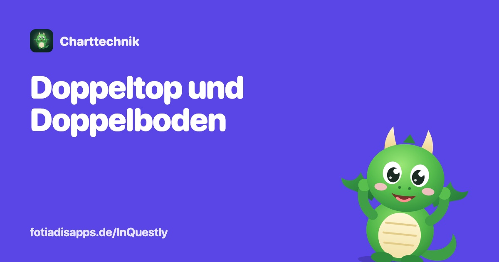
CharttechnikDoppeltop und Doppelboden: Formationen erkennen und Kursziel berechnen
Zweimal am selben Hoch gescheitert, zweimal am selben Tief gehalten: Doppeltop und Doppelboden gehören zu den bekanntesten Umkehrformationen. So liest du sie richtig.
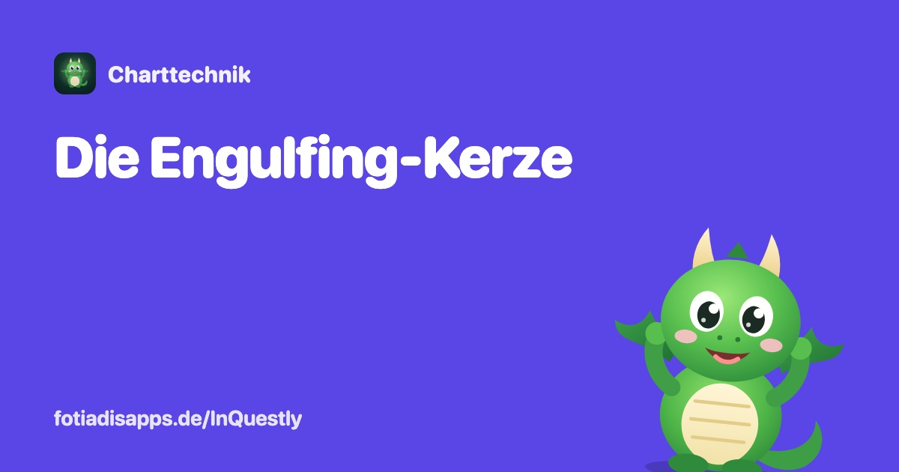
CharttechnikEngulfing-Kerze: Bedeutung, Erkennen und typische Fehler
Eine Kerze verschluckt die vorherige komplett: Das Engulfing-Muster zeigt, dass eine Seite die Kontrolle übernommen hat. Wann es zählt und wann nicht.
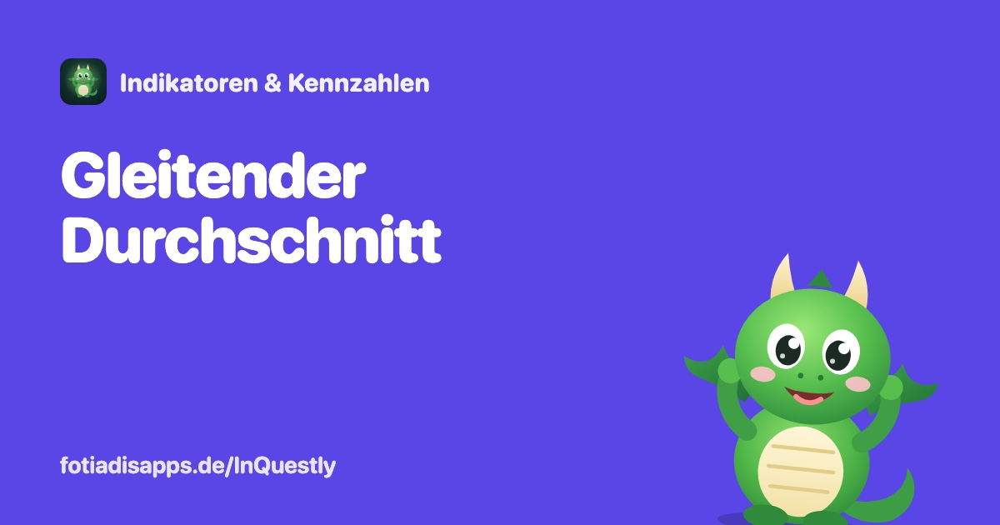
Indikatoren & KennzahlenGleitender Durchschnitt: SMA, EMA und die 200-Tage-Linie einfach erklärt
Der gleitende Durchschnitt glättet den Kursverlauf und macht Trends sichtbar. Wie er berechnet wird, was die 200-Tage-Linie bedeutet und wo seine Grenzen liegen.
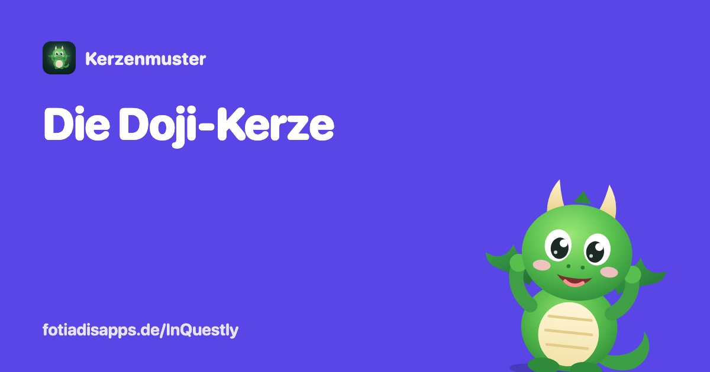
CharttechnikDoji-Kerze: Bedeutung und die 4 wichtigsten Arten
Beim Doji liegen Eröffnung und Schluss fast gleich auf. Das sieht unscheinbar aus, kann aber das Ende eines Trends anzeigen. Hier lernst du die vier wichtigsten Doji-Arten und wann sie zählen.
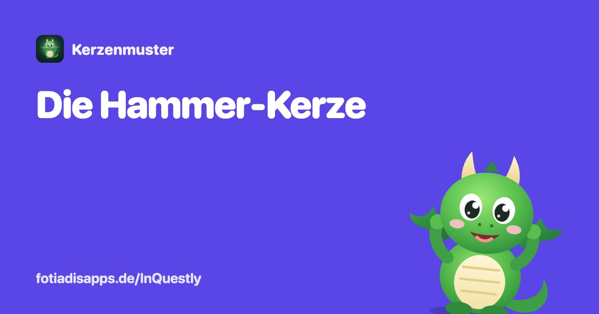
CharttechnikHammer-Kerze: Bedeutung, Farbe und Trading
Der Hammer ist eines der bekanntesten Kerzenmuster. Er kann das Ende eines Abwärtstrends ankündigen, aber nur, wenn Form, Ort und Bestätigung stimmen. So erkennst du ihn sicher.
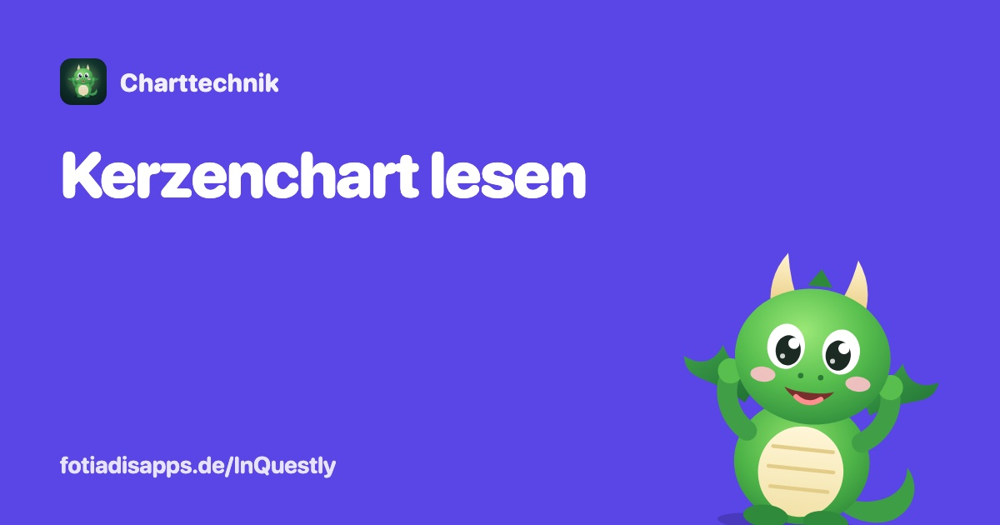
CharttechnikKerzenchart lesen: So verstehst du jede Kerze
Kerzencharts sehen auf den ersten Blick kompliziert aus. Dabei steckt in jeder Kerze nur eine einfache Geschichte aus vier Kursen. So liest du sie in wenigen Minuten.
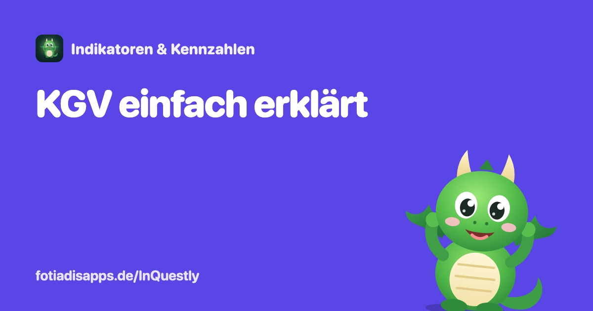
Indikatoren & KennzahlenKGV einfach erklärt: Wann ist eine Aktie günstig?
Das KGV ist die bekannteste Kennzahl, um Aktien zu bewerten. Es zeigt, wie viele Jahresgewinne du für eine Aktie bezahlst. Hier lernst du, wie du es berechnest, richtig vergleichst und wo es dich in die Irre führen kann.
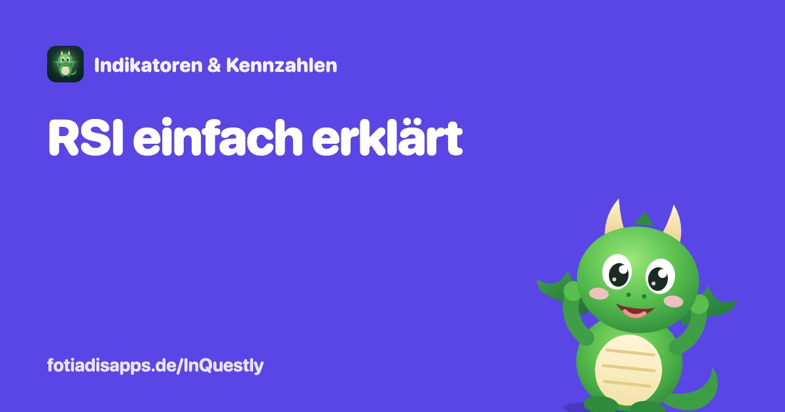
Indikatoren & KennzahlenRSI einfach erklärt: Überkauft, überverkauft und Divergenz
Der RSI gehört zu den beliebtesten Indikatoren. Er zeigt, wie stark die Aufwärts- und Abwärtsbewegungen der letzten Tage waren. Hier lernst du, wie er berechnet wird, was 70 und 30 bedeuten und warum „überkauft“ kein Verkaufssignal ist.
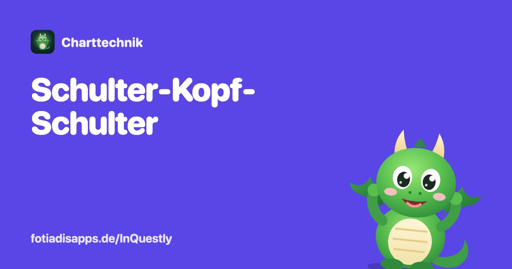
CharttechnikSchulter-Kopf-Schulter-Formation: erkennen und Kursziel berechnen
Die Schulter-Kopf-Schulter-Formation ist die bekannteste Umkehrformation der Charttechnik. So erkennst du sie, so berechnest du das Kursziel, und daran scheitern die meisten.
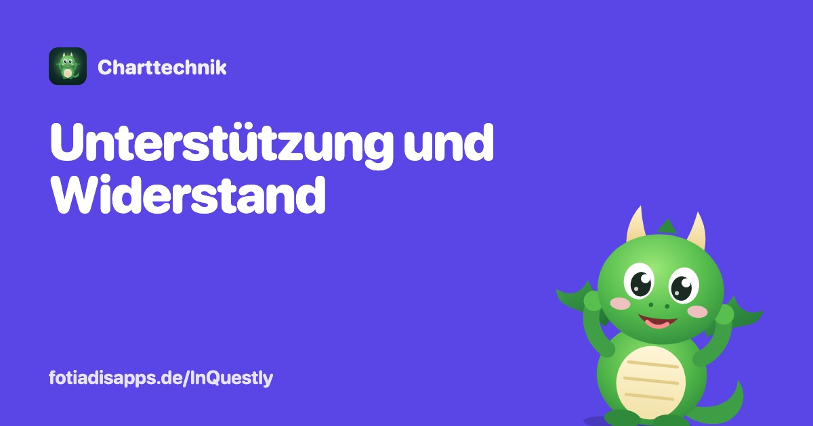
CharttechnikUnterstützung und Widerstand einfach erklärt (mit Beispielen)
Unterstützung und Widerstand sind die wichtigsten Linien im Chart. Hier lernst du, wo sie entstehen, wie du sie als Zone einzeichnest und woran du einen echten Ausbruch von einer Falle unterscheidest.
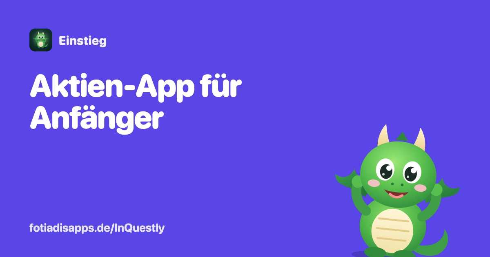
EinstiegAktien-App für Anfänger: Welche Börsen-App wofür?
„Aktien-App“ kann drei sehr verschiedene Dinge bedeuten: handeln, beobachten oder lernen. So findest du heraus, welche App du als Anfänger wirklich brauchst.
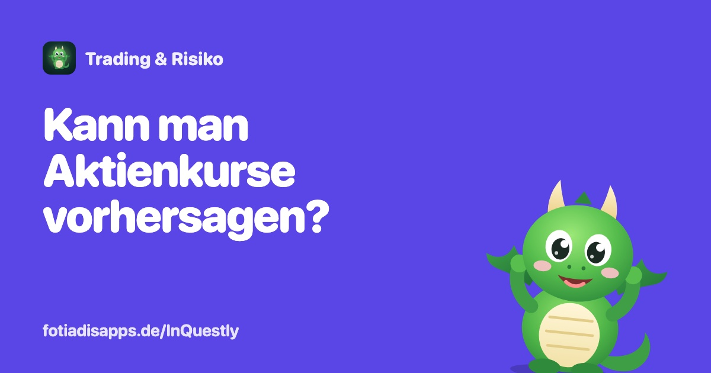
Trading & RisikoKann man Aktienkurse vorhersagen? Was Prognosen leisten
Jeden Dezember erscheinen neue Jahresprognosen für den DAX. Wie verlässlich sind sie, und was lernst du, wenn du selbst Prognosen abgibst?
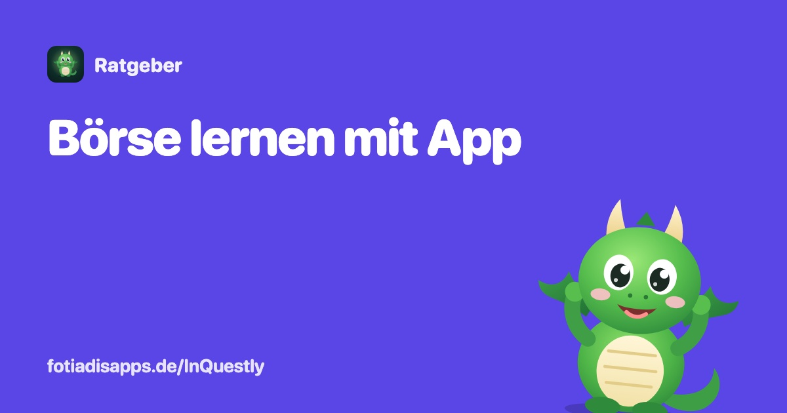
EinstiegBörse lernen App: So findest du die richtige Lern-App
Eine gute Lern-App macht aus Börsenwissen eine tägliche Gewohnheit. Diese Checkliste zeigt, worauf du achten solltest, bevor du dich für eine App entscheidest.
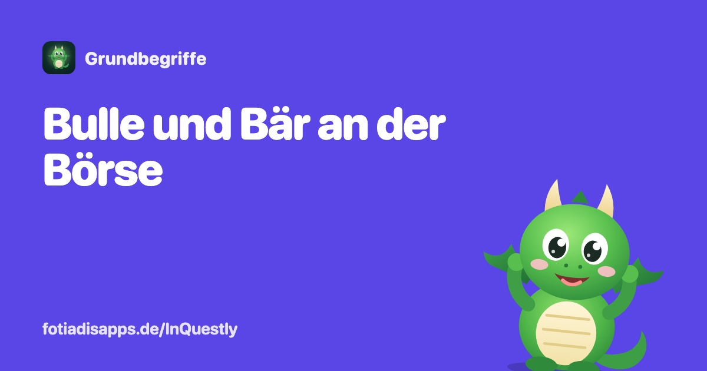
EinstiegBulle und Bär: Was die Begriffe an der Börse bedeuten
Der Bulle steht für steigende, der Bär für fallende Kurse. Was die Begriffe genau bedeuten, ab wann man von einem Bärenmarkt spricht und warum die Bilder so gut passen.
GeldanlageWas ist der DAX? Einfach erklärt für Einsteiger
Jeden Abend in den Nachrichten: „Der DAX schloss mit einem Plus von 0,8 Prozent.“ Was dahintersteckt, wie der Index berechnet wird und was er nicht zeigt.
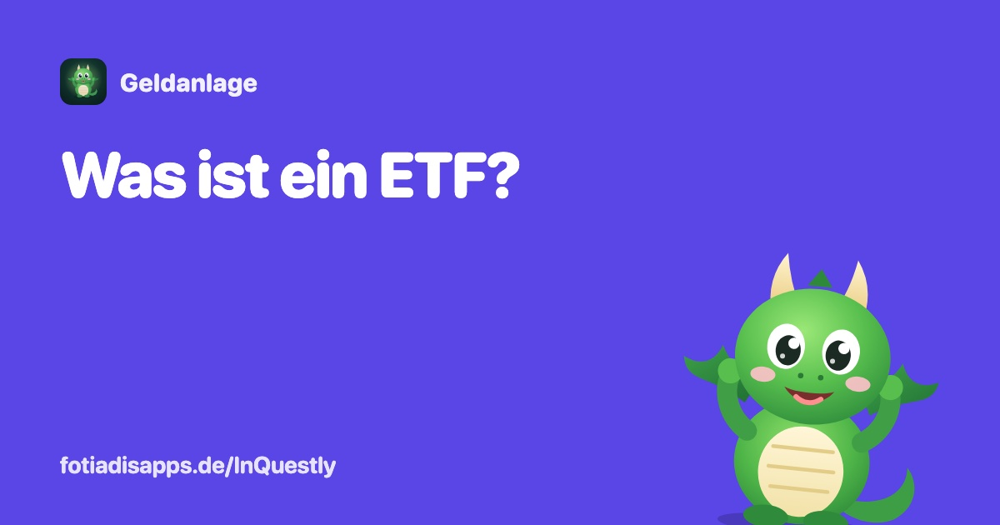
GeldanlageWas ist ein ETF? Einfach erklärt für Anfänger
ETF klingt technisch, dahinter steckt aber eine einfache Idee: ein Korb aus vielen Aktien, den du mit einem einzigen Kauf bekommst. Die wichtigsten Begriffe, einfach erklärt.
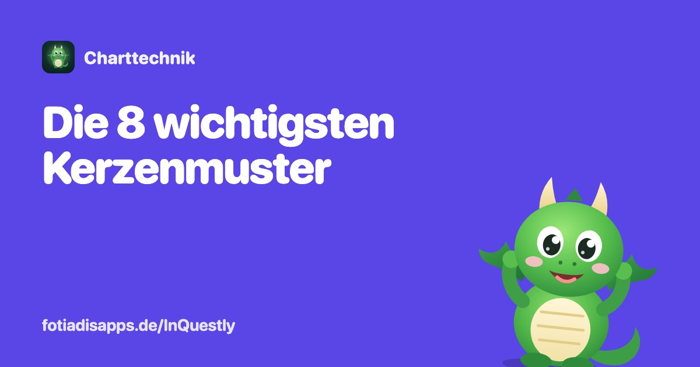
CharttechnikKerzenmuster für Anfänger: Die 8 wichtigsten Candlesticks
Eine einzelne Kerze erzählt, wie ein Handelstag verlief. Wer die wichtigsten Kerzenmuster kennt, erkennt Stimmungswechsel früher. Mit Bildern aus der App.
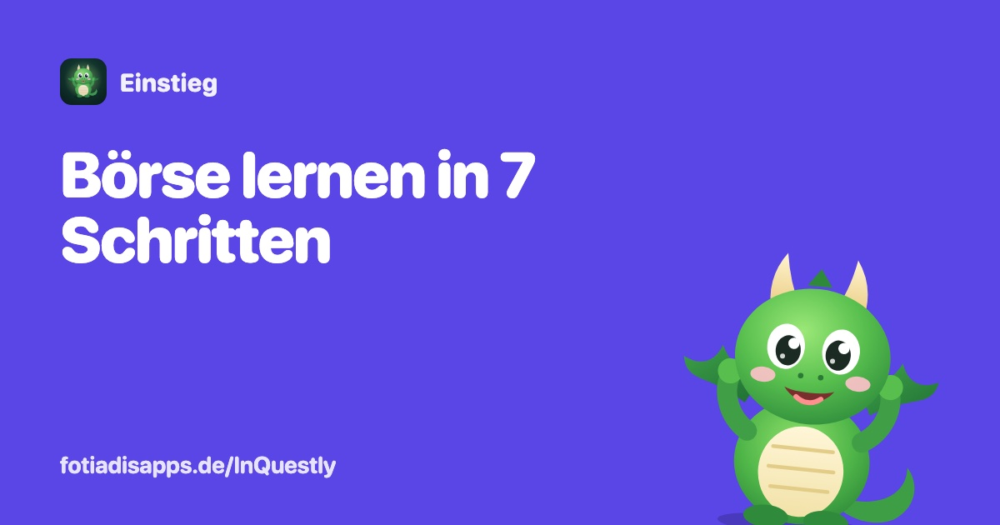
EinstiegBörse lernen: Der Einstieg in 7 Schritten
Du willst verstehen, was an der Börse passiert, aber nicht gleich Geld riskieren? Diese 7 Schritte bringen dich vom ersten Begriff bis zum ersten Chart.
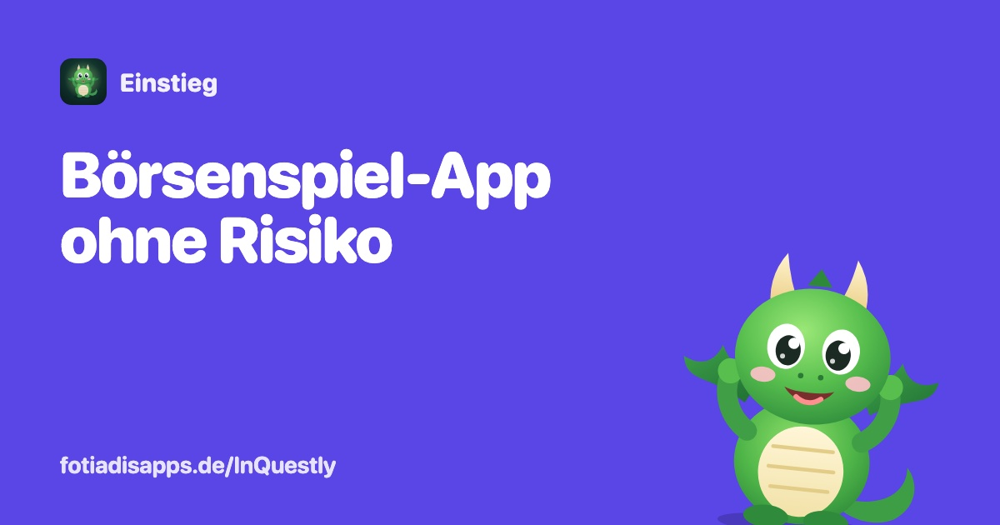
EinstiegBörsenspiel-App und Aktien-Simulator: kostenlos üben
Börse lernen geht auch spielerisch. Welche Arten von Börsenspielen es gibt, was ein gutes Spiel ausmacht und warum Spielgeld nicht alles ersetzt.
 Trading & Risiko
Trading & RisikoCRV berechnen: Chance-Risiko-Verhältnis einfach erklärt
Vor jedem Trade stellen Profis zwei Fragen: Was kann ich verlieren, und was kann ich gewinnen? Das Chance-Risiko-Verhältnis setzt beides ins Verhältnis.
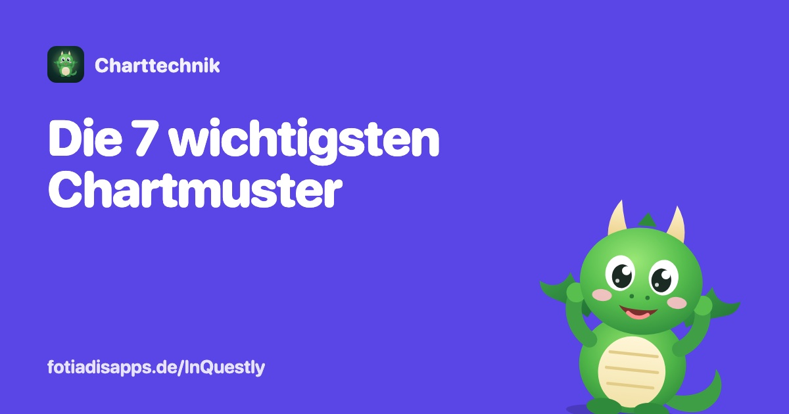
CharttechnikChartmuster erkennen: Die 7 wichtigsten Formationen einfach erklärt
Wer Charts liest, sieht immer wieder dieselben Formen. Diese sieben Chartmuster kennt jeder Profi, und so erkennst du, ob sie wirklich gelten.
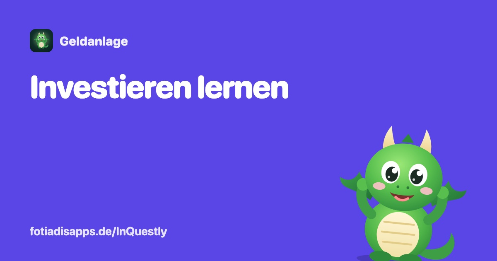
GeldanlageInvestieren lernen: Der Fahrplan für Einsteiger
Investieren ist kein Glücksspiel, sondern Handwerk. Dieser Fahrplan zeigt, in welcher Reihenfolge du die wichtigsten Grundlagen lernst.
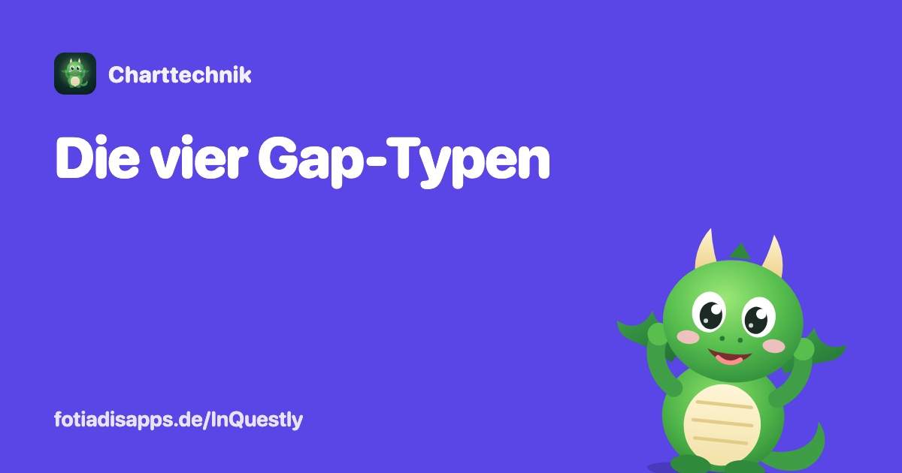
CharttechnikKurslücken (Gaps): Die vier Gap-Typen einfach erklärt
Manchmal springt ein Kurs über Nacht auf ein neues Niveau. Solche Kurslücken verraten viel über die Stimmung, wenn man die vier Typen auseinanderhalten kann.
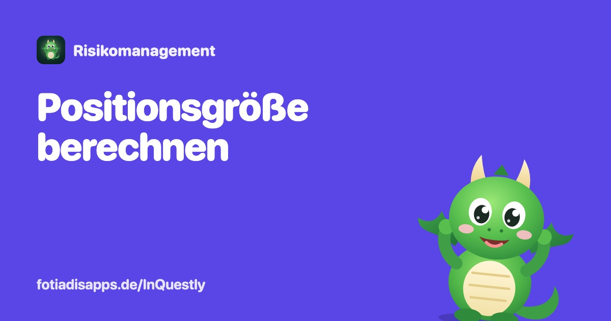
Trading & RisikoPositionsgröße berechnen: Die 1-Prozent-Regel erklärt
Wie viel du bei einem Fehltrade verlierst, entscheidet nicht der Einstieg, sondern die Positionsgröße. So rechnen Profis sie in drei Schritten aus.
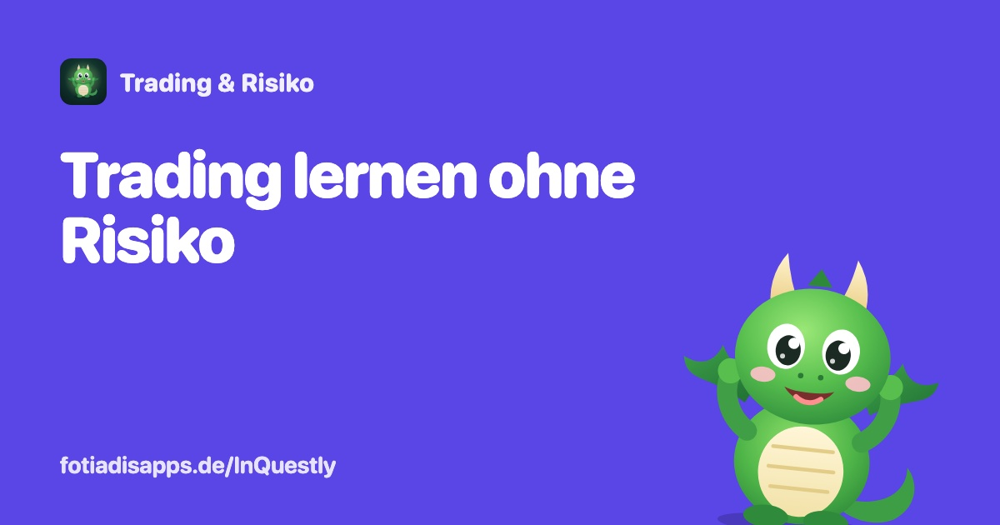
Trading & RisikoTrading lernen für Anfänger: kostenlos und ohne Risiko üben
Trading sieht in Videos leicht aus. In Wirklichkeit entscheidet nicht der eine geniale Trade, sondern ein Plan, der Verluste klein hält. So lernst du es Schritt für Schritt.